Vista — landing page design directions
Six standalone mockups for a public Vista marketing site. Each is a materially different visual world over the same product truth: on-device recording → redaction → steps → cases → process map → ranked automation candidates. Screenshots are 1440 px (first viewport) and 390 px. Click "Open" for the live, responsive page.
01 · Ledger product-led, light
Clean operational-software feel. The hero object is a discovered process map with real edge counts; the pipeline is a proper table, the swivel-chair map is a ranked list.
- Type
- Inter Tight + JetBrains Mono
- Mood
- Attio / Affinity
- Best for
- Buyers who want to see the product
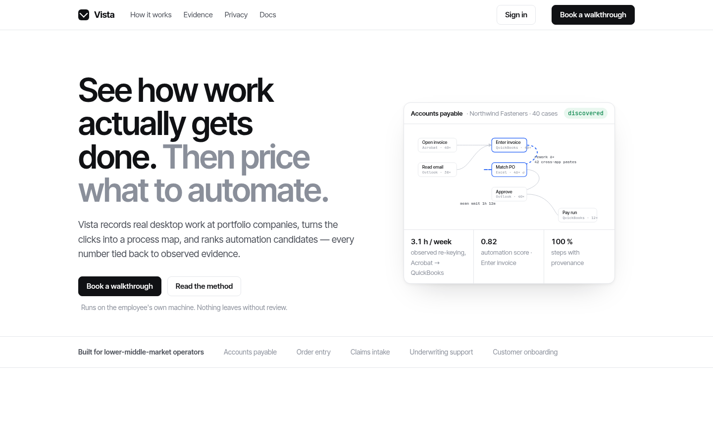
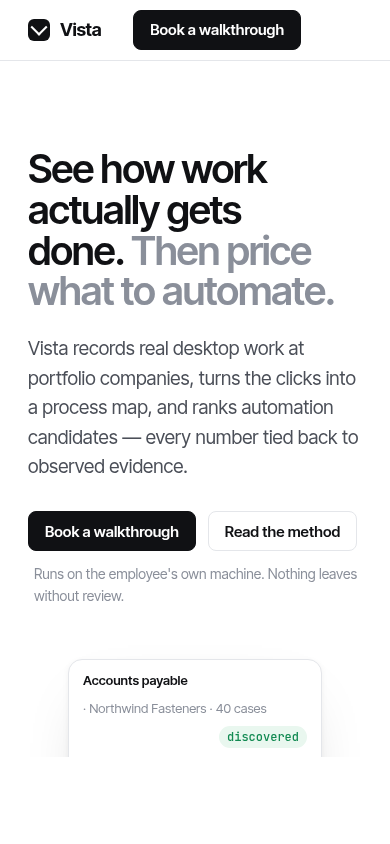
02 · Field Notes warm editorial
Serif, essay-led, calm. A day-timeline of a pseudonymised AP clerk anchors the hero; the argument "process maps are drawn from memory, ours from Tuesdays" carries the page.
- Type
- Newsreader + Inter
- Mood
- Anthropic
- Best for
- Trust, thoughtfulness, privacy story
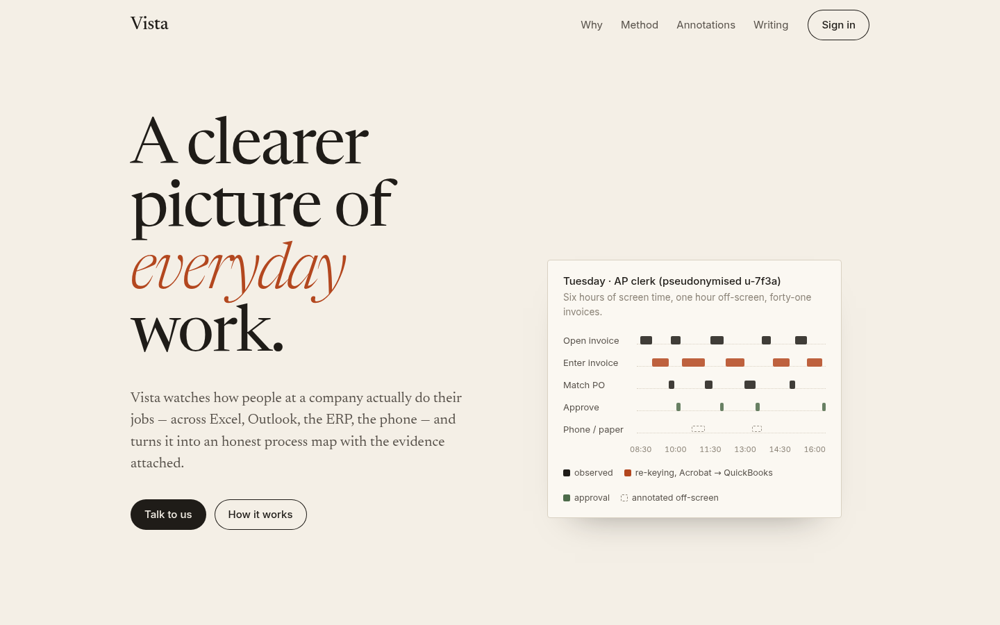
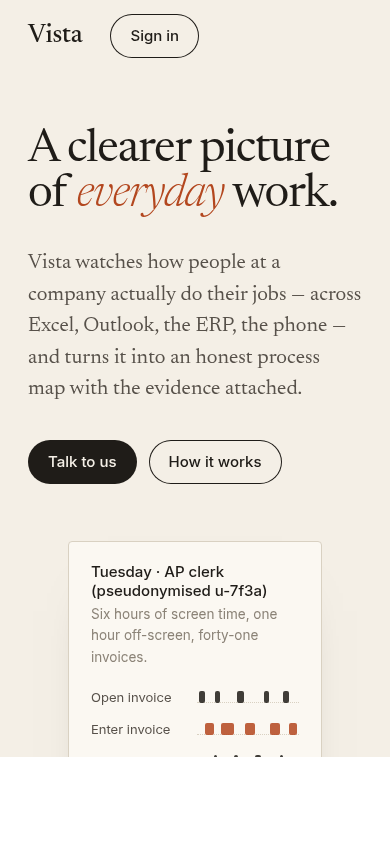
03 · Control Room dark, cinematic
Near-black with signal green. A live canvas of raw events collapsing into process nodes sits behind the headline; a terminal-style redaction sample and a summary.json panel make the engine tangible.
- Type
- Space Grotesk + IBM Plex Mono
- Mood
- Noomo / Greyparrot
- Best for
- Technical credibility, "AI infra" positioning
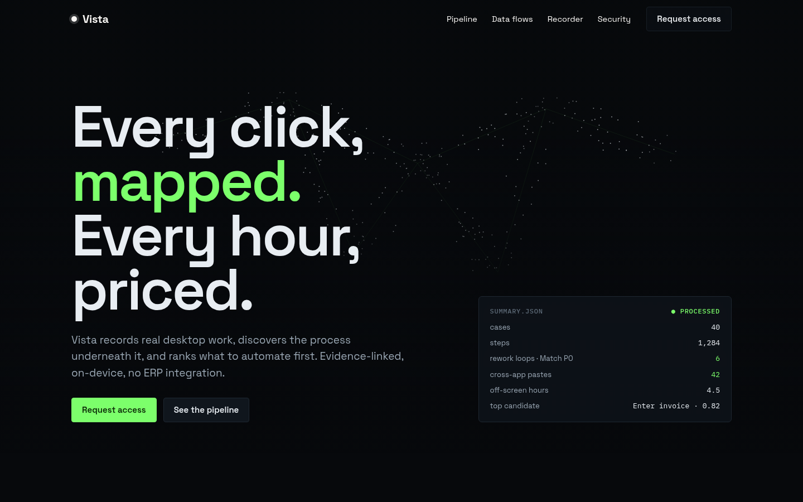
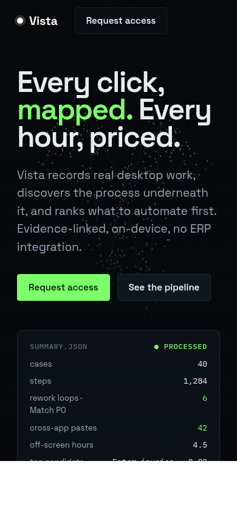
04 · Colour Blocks bold geometric
The clicks → steps → cases → map → dollars formula rendered as five coloured plates with CSS-drawn glyphs. Heavy type, thick rules, a ranked candidate list instead of feature cards.
- Type
- Manrope + Fraunces
- Mood
- Cohere
- Best for
- Standing out, brand memorability
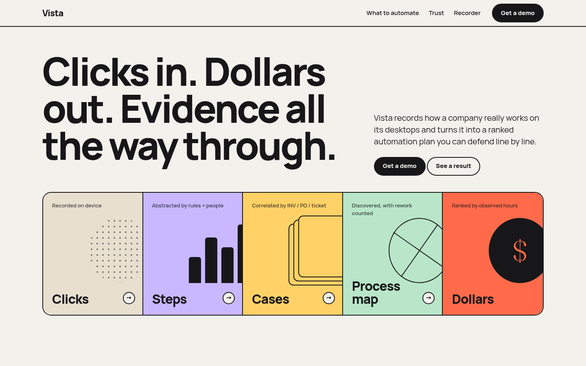
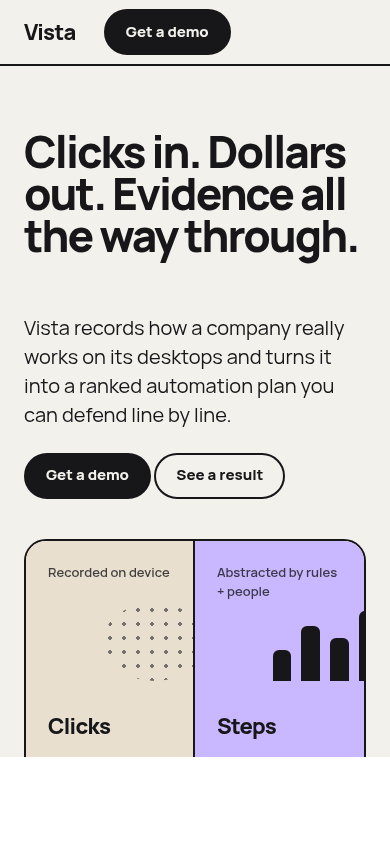
05 · Overlay friendly, recorder-first
Consumer-app warmth. The hero is a fake desktop (Acrobat → QuickBooks) with the Vista recorder pill on top and an animated cross-app paste. Sells simplicity: one button, honest map.
- Type
- Plus Jakarta Sans
- Mood
- Jasper / Jamie
- Best for
- Employee adoption, low-friction pitch
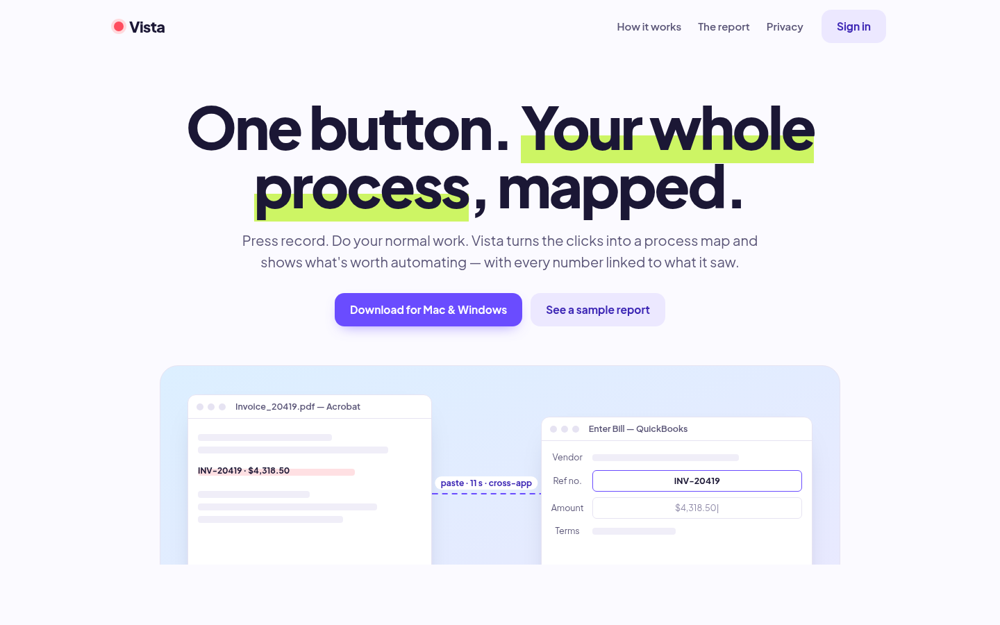
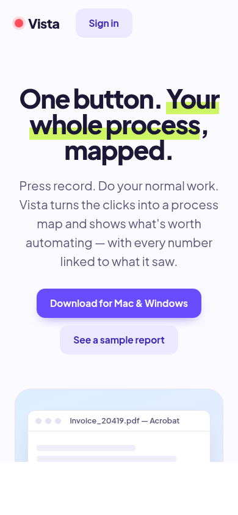
06 · Dossier PE diligence memo
Navy, serif headlines, a printed-memo hero. Speaks directly to the fund: observed hours versus interview estimates, a four-step method, a data-flow table as the integration backlog.
- Type
- Source Serif 4 + Geist
- Mood
- Affinity / institutional
- Best for
- Selling to operating partners and deal teams
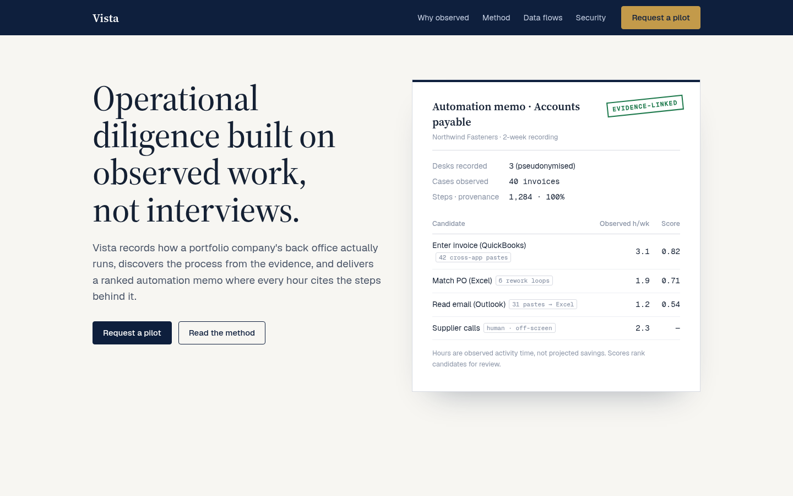
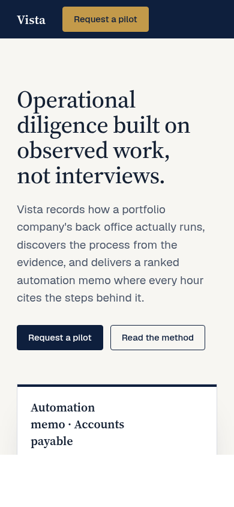